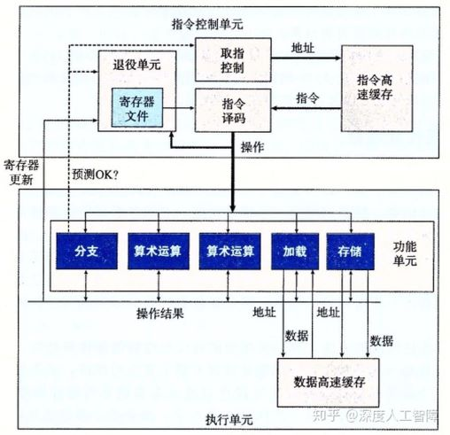
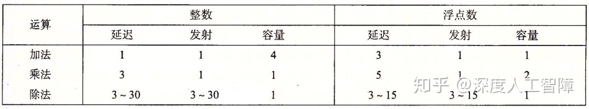
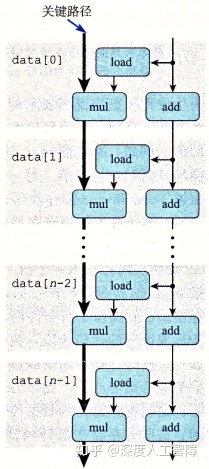
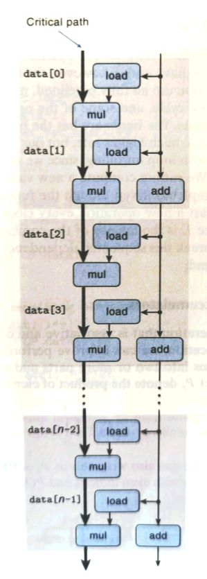

第三章讨论过compiler可以自己优化代码，但是这种优化必定是安全的。因此有两种optimization blocker是不会被compiler所优化——memory aliasing、function call。
void twiddle1(long *xp, long *yp)
{
*xp += *yp;
*xp += *yp;
}
void twiddle2(long *xp, long *yp)
{
*xp += 2 * *yp;
}
twiddle1需要6次内存引用（2次读取yp、2次读取xp和2次写xp），twiddle2只需要3次（1次读取yp，1次读取xp和1次写xp）。但是当xp与yp一致时，twiddle1与twiddle2结果不同。 因此编译器不会将twiddle1优化成twiddle2。即便程序里不存在memory aliasing，编译器也不敢贸然优化。
long f();
long func1()
{
return f()+f()+f()+f();
}
long func2()
{
return 4*f();
}
func1需要四次函数调用，func2只需要一次。但是编译器不会将func1优化成func2，考虑如下的f()：
long count = 0;
long f()
{
return count++;
}
显然func1与func2结果不同。即便程序里不存在这么特殊的f()，编译器也不敢贸然优化。
不同于学习算法时，利用大O表示法来描述performance，我们利用cycles per element, abbreviated CPE，来描述performance。 书上似乎没有讲如何测量CPE，我们也不深究测量方法了。
第四章有讲过CPU的时钟周期cycle，这里再顺带一提默频、睿频的含义。比如我现在所用的i7-9850H的默频是2.6GHz，也就是默认的CPU的时钟一秒钟经历2.6GHz。 现在的速度是0.88GHz，也就是实际CPU主频只有0.88GHz，毕竟只是在打字。睿频是一种技术，使得CPU的时钟频率可以超越默频。
现有一个vector类，现在想要把vector里面的所有元素进行OP运算，并把结果存在*dest，OP可能是加法也可能是乘法。 当OP是加法时，IDENT等于0；当OP是乘法时，IDENT等于1。vec_ptr是指向vector类的指针。data_t可能是long也可能是double。
void combine1(vec_ptr v, data_t *dest)
{
long i;
*dest = IDENT;
for (i = 0; i < vec_length(v); i++) {
data_t val;
get_vec_element(v, i, &val); //将v中的第i个元素存在&val里
*dest = *dest OP val;
}
}
| Function | Method | long+ | long* | float+ | float* |
|---|---|---|---|---|---|
| combine1 | -O1优化 | 10.12 | 10.12 | 10.17 | 11.14 |
显然combine1每次for循环均要调用vec_length，而vector长度并不改变，陷入了5.1.2function call的optimization blocker之中。修改如下：
void combine2(vec_ptr v, data_t *dest)
{
long i;
long length = vec_length(v);
*dest = IDENT;
for (i = 0; i < length; i++) {
data_t val;
get_vec_element(v, i, &val);
*dest = *dest OP val;
}
}
| Function | Method | long+ | long* | float+ | float* |
|---|---|---|---|---|---|
| combine2 | Move vec_length | 7.02 | 9.03 | 9.02 | 11.03 |
combine2的for循环中get_vec_element()被多次调用，考虑通过vector分装的数组来绕过该函数调用。虽然这种方法违背了分装。。。
void combine3(vec_ptr v, data_t *dest)
{
long i;
long length = vec_length(v);
data_t *data = get_vec_start(v); //获得v的第一个元素地址，接下来便可寻秩遍历了。
*dest = IDENT;
for (i = 0; i < length; i++) {
*dest = *dest OP data[i];
}
}
| Function | Method | long+ | long* | float+ | float* |
|---|---|---|---|---|---|
| combine3 | Direct data access | 7.17 | 9.02 | 9.02 | 11.03 |
奇怪的事情发生了，combine3性能比combine2要差，这说明循环中的其他操作才是瓶颈。
之前所有的代码for循环中都是反复读取并写入dest指针指向的内存，造成了时间的浪费。修改如下：
void combine4(vec_ptr v, data_t *dest)
{
long i;
long length = vec_length(v);
data_t *data = get_vec_start(v);
data_t acc = IDENT;
*dest = IDENT;
for (i = 0; i < length; i++) {
acc = acc OP data[i];
}
*dest = acc;
}
| Function | Method | long+ | long* | float+ | float* |
|---|---|---|---|---|---|
| combine4 | Accumulate in temporary | 1.27 | 3.01 | 3.01 | 5.01 |
注意到这里存在着memory aliasing的optimization blocker：当dest指向vector内部的元素时，计算的结果是不同的。编译器自然不会进行类似combine4的优化。
之前combine2、3、4的修改只是针对两个optimization blocker的。想要理解CPE以及进一步优化代码，需要了解处理器的体系结构和其表现出的指令级并行(instruction-level parallelism, 同时对多条指令进行求值)。

5.4节内容许多来自CSAPP：14[VB]优化程序性能。
如上图所示是一个简化的Intel处理器的结构，采用了超标量(superscalar)体系结构，意味着处理器可以在每个时钟周期执行多个操作，并且可以乱序(Out-of-order)执行。
指令控制单元通过取指控制逻辑（fetch control）从指令高速缓存中读出指令序列，并根据这些指令序列生成一组针对程序数据的基本操作，然后发送到执行单元中。
执行单元使用投机执行技术执行由ICU产生的基本操作，通常每个时钟周期会接收多个基本操作，将这些操作分配到一组功能单元中来执行实际的操作。
csapp的参考机Intel Core i7 Haswell算数运算性能如下图所示

应该指出，发射时间为1的运算，意味着对应的功能单元是完全流水线化的（Fully Popelined）。除法运算的延迟等于发射时间，意味着需要完全执行完当前的除法运算，才能执行下一条除法运算。 完全流水线化的也就是第四章讨论的情况。
根据以上运算性能，我们可以得到CPE值的两个基本界限，来描述程序的最大性能：
1）延迟界限(latency bound)：
2）吞吐量界限(throughput bound)：
参考机所能达到的CPE界限如下：
| 界限 | long+ | long* | float+ | float* |
|---|---|---|---|---|
| 延迟界限 | 1.00 | 3.00 | 3.00 | 5.00 |
| 吞吐量界限 | 0.50 | 1.00 | 1.00 | 0.50 |
| Function | Method | long+ | long* | float+ | float* |
|---|---|---|---|---|---|
| combine4 | Accumulate in temporary | 1.27 | 3.01 | 3.01 | 5.01 |
| 延迟界限 | / | 1.00 | 3.00 | 3.00 | 5.00 |
注意到combine4的CPE与Intel Core i7 Haswell算数运算性能中的延迟基本一致：整型加法为1、乘法为3、浮点加法为3、乘法为5。这可以利用以下数据流图理解：

上图解释了乘法的情况，其实把mul改成OP可能更好一点。combine4的for循环存在两个数据相关，一个是i的加法、另一个是acc的乘法。由于存在数据相关，功能单元无法进行流水线。i的加法延迟为1，acc乘法延迟为3（若acc为整型）或者5（浮点型）。 可见acc的运算时长多于i的运算，形成了所谓的关键路径（critical path）。
还需指出，数据流中的关键路径只是提供程序需要周期数的下界，还有很多其他因素会限制性能。比如当我们将左侧的操作变为整数加法时，根据数据流预测的CPE应该为1，但是由于这里的操作变得很快，使得其他操作供应数据的速度不够快，造成实际得到的CPE为1.27。
之前通过努力，将CPE成功的降低到接近latency bound的水平。但是处理器的能力可以达到throughput bound的水平。于是血案还在继续。。。
void combine5(vec_ptr v, data_t *dest)
{
long i;
long length = vec_length(v);
long limit = length-k+1;
data_t *data = get_vec_start(v);
data_t acc = IDENT;
for (i = 0; i < limit; i += k) {
acc = ((acc OP data[i]) OP data[i+1]) ... OP data[i+k-1];
}
for (; i < length; i++) {
acc = acc OP data[i];
}
return acc;
}
| Function | Method | long+ | long* | float+ | float* |
|---|---|---|---|---|---|
| combine5 | 2 * 1 unrolling | 1.01 | 3.01 | 3.01 | 5.01 |
| 延迟界限 | / | 1.00 | 3.00 | 3.00 | 5.00 |
简单的说，combine5通过在每次循环干两倍的活，把n次循环变成了n/2次。然而同样由于数据相关，并没有突破latency bound（acc = ((acc OP data[i]) OP data[i+1]) ... OP data[i+k-1]不断利用acc导致了数据相关）。 只不过是把整数加法成功优化成了延迟界限，这是因为延迟展开能减少不必要的操作的数量（例如循环索引计算和条件分支）。k等于2时的combine5的数据流图如下：

void combine6(vec_ptr v, data_t *dest)
{
long i;
long length = vec_length(v);
long limit = length-k+1;
data_t *data = get_vec_start(v);
data_t acc0 = IDENT;
data_t acc1 = IDENT;
...
data_t acck_1 = IDENT; //k个变量
for (i=0; i < limit; i+=k) {
acc0 = acc0 OP data[0];
acc1 = acc1 OP data[1];
...
acck_1 = acck_1 OP data[k-1]; //更新k个变量
}
for(; i < length; i++) {
acc0 = acc0 OP data[i];
}
*dest = acc0 OP acc1 OP ... OP acck_1;
}
| Function | Method | long+ | long* | float+ | float* |
|---|---|---|---|---|---|
| combine6 | 2 * 2 unrolling | 0.81 | 1.51 | 1.51 | 2.51 |
| combine6 | 10 * 10 unrolling | 0.55 | 1.00 | 1.01 | 0.52 |
| combine6 | 20 * 20 unrolling | 0.83 | 1.03 | 1.02 | 0.68 |
| 延迟界限 | / | 1.00 | 3.00 | 3.00 | 5.00 |
| 吞吐量界限 | / | 0.50 | 1.00 | 1.00 | 0.50 |
可见k × k循环展开成功地突破了延迟界限。k等于2的数据流图如下所示：
其中，%xmm0保存acc0，%xmm保存%acc1，%rdx保存i。可以发现，我们通过在循环中引入多个变量， 使得原来在同一个循环寄存器中的浮点数乘法运算分配到不同的循环寄存器中，就消除了循环寄存器的数据相关限制， 就可以使用不同的功能单元，或利用功能单元的流水线进行并行计算，就能突破延迟界限。
为了接近吞吐量界限，我们需要使用系统中的所有功能单元，并且保证功能单元的流水线始终是慢的。 所以对于容量为C、延迟为L的操作而言，需要设置 k ≥ C × L（最快每个时钟周期执行一个操作）。
可以看到20 × 20的循环展开性能反而低于10 × 10的循环展开，这是因为k大于寄存器的数目，则中间结果就会保存到内存的堆栈中，使得计算中间结果要反复读写内存，造成性能损失。
之前提及combine5由于acc = ((acc OP data[i]) OP data[i+1]) ... OP data[i+k-1]不断利用acc而导致了数据相关。这个可以通过改成acc = acc OP (data[i] OP (data[i+1]) (... OP data[i+k-1]))来避免数据相关。 将这种修改后的循环展开称做k * 1a展开。其CPE如下：
| Function | Method | long+ | long* | float+ | float* |
|---|---|---|---|---|---|
| combine5 | 2 * 1 unrolling | 1.01 | 3.01 | 3.01 | 5.01 |
| combine6 | 2 * 2 unrolling | 0.81 | 1.51 | 1.51 | 2.51 |
| combine7 | 2 * 1a unrolling | 1.01 | 1.51 | 1.51 | 2.51 |
可以发现kx1a的性能类似于kxk的性能。编译器并不会自动做这种优化，因为浮点数并不满足结合律，虽然整型满足结合律。
想要提高程序运行速度，可以采取以下几点：
利用gprof工具可以确定程序的各个部分需要的时间。这行为叫做程序剖析（Profiling）。似乎valgrind也可以。
加载数据和存储数据也可能破坏程序性能。
☆ * . ☆
. ∧＿∧ ∩ * ☆
* ☆ ( ・∀・)/ .
. ⊂ ノ* ☆
☆ * (つ ノ .☆
(ノ